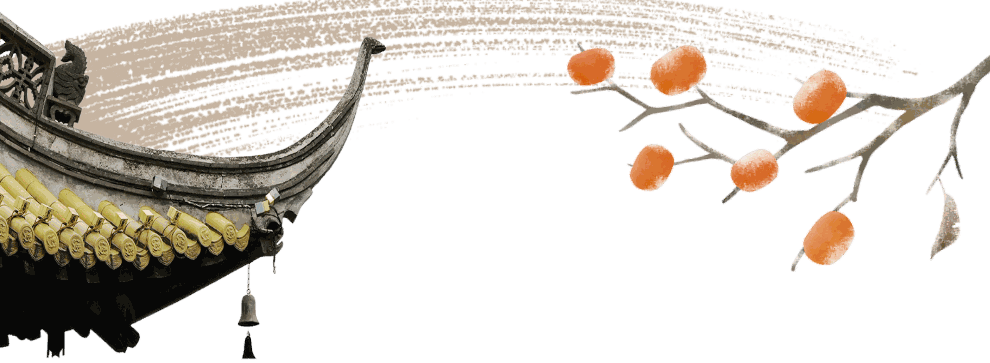
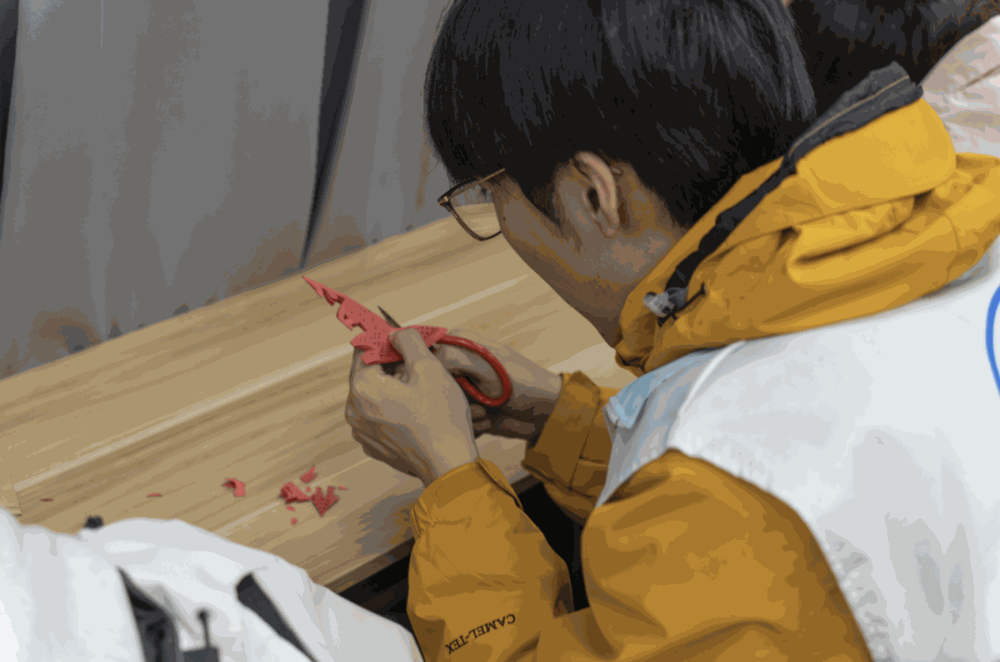
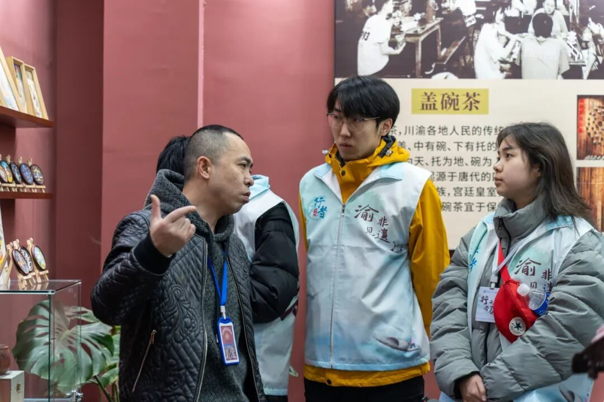

【行者无疆·渝见非遗】个人实践感悟——闫磊


踏足重庆的烟火巷陌与青绿山川，一场与非遗的深度邂逅，让我在指尖的温度里，读懂了文化传承的千钧重量。从荣昌陶的粗粝温润到折扇的开合风雅，从夏布的经纬交织到剪纸的栩栩如生等等。每一项技艺都藏着时光沉淀的密码，每一次亲身体验都撞碎了我对 “非遗” 的刻板想象。而比这些精妙技艺更让人动容的，是那些坚守在传承路上的非遗老师们。

剪纸，是化繁为简的东方美学。在重庆非遗体验馆中，一张张普通红纸，经翻转、裁剪，片刻间便化作花鸟鱼虫、福禄寿喜。每一刀都精准利落，每一个纹样都藏着吉祥寓意。当我握着剪刀，笨拙地剪出第一个歪歪扭扭的图案时，才真切体会到，那些稀疏平常的窗花剪纸，亦需传承人积年累月的打磨练习方能精通。也唯有沉下心来，方能与时光对话，与传统温柔相拥。

传统文化体验

荣昌陶博物馆的馆长爷爷，身影始终萦绕心头。他腿脚早已不便，却执意拄着拐杖，陪我们穿行在古老的制陶遗址。指尖抚过斑驳的窑壁，他眼中闪烁的光，比曾经窑火更显炽热。
“每一块陶土都记得祖辈的手艺”，没有华丽辞藻的言说，却让我读懂了 “坚守” 二字最动人的模样，非遗从不是博物馆里冰冷的展品，而是有人用一生光阴守护的鲜活生命。
除了陶土的厚重之外，尹老师的折扇工坊里，木头与竹香交织成清雅的气息也同样令我印象深刻。没有刻意寒暄，老师细细为我们讲述折扇的曲折发展史，那些藏在岁月里的坚守与不易，随话语缓缓铺展。
随后，他拉着我们围坐案前，手把手教我们穿扇骨、糊扇面。老师指尖翻飞间，原本零散的竹片便有了挺拔风骨，可轮到自己上手，才发觉看似简单的工序，实则暗藏玄机。这份亲身体验，让我更深刻地感悟到非遗传承的艰辛。而当问及折扇价格，本以为会是高昂定价，却不料十分实惠。这份不带功利的真诚，让我豁然明白：非遗传承从来不是孤勇前行，而是用满心热爱点燃更多人的心意，让古老技艺在掌心流转不息。

夏布织造的经纬之间，藏着自然与匠心的深度共鸣。站在博物馆的陈列窗前，仿佛能看见旧时织女们端坐织机前，丝线在指尖轻盈跳跃，经纬交错间，普通棉花便化作了透气坚韧的夏布。轻轻抚摸布料上细腻的纹路，阳光的暖、雨露的润与双手的温度，仿佛皆能触摸 —— 非遗从不是凭空诞生的奇迹，而是人与自然对话的智慧结晶，是祖辈们将生活哲学细细织进经纬的浪漫表达。
一路走，一路看，从博物馆的文物陈列到工坊的活态传承，非遗于我而言，早已不是课本上抽象的名词，而是可触、可感、可学的生活方式。那些坚守在灶台旁、织机前、案几边的传承人，用一双双巧手延续着千年文脉，用一份份真诚打动着每一个走近非遗的人。这场重庆之行的社会实践，让我深深懂得非遗的生命力不在于 “古老”，而在于 “鲜活”。它需要有人愿意走近、愿意学习、愿意传播，让指尖的温度不断传递，让文脉在代代相传中生生不息。

来源 | 行者无疆实践团
图片 | 行者无疆实践团
文字 | 闫 磊
编辑 | 童思嘉
审核 | 刘辰锡
责编 | 邹靓靓 周 亮